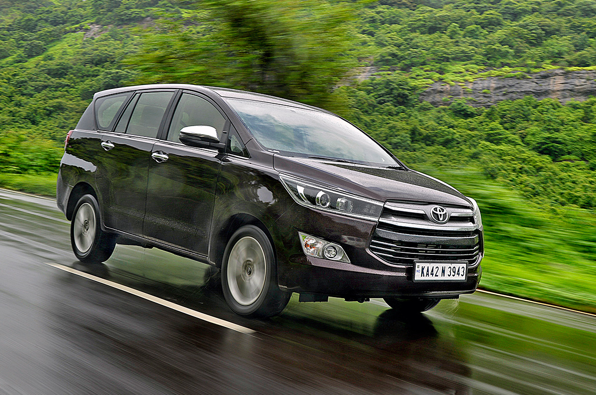

Revisi yang ditampilkan oleh Civic berupa desain baru pada front lower bumper yang lebih aerodinamis, rear chrome lower garnish, dan LED fog light dengan hiasan chrome garnish. Sementara roda alloy 17” dengan two-tone color. Di bagian interior, penyegarannya meliputi desain baru pada bangku yang kian elegan, jok penumpang depan kini dilengkapi dengan 4-way power seat adjuster yang berguna menambah kenyamanan dan auto dimming rear-view mirror untuk memperjelas visibilitas saat terkena pantulan sinar dari kendaraan di belakang. PT Honda Prospect Motor menanam mesin 1.5L VTEC Turbo dengan teknologi Earth Dreams. Jantung mekanis ini menghasilkan tenaga maksimal 173 PS pada 5.500 rpm dan torsi puncak 220Nm pada 1.700 - 5.500rpm, namun tetap hemat bahan bakar dan ramah lingkungan. Transmisi CVT dengan Earth Dreams Technology diklaim menyuguhkan akselerasi responsif, lebih halus serta konsumsi bahan bakar yang efisien. Fitur paddle-shift 7-speed memungkinkan pengemudi menikmati perpindahan gear secara sporty hanya dengan menggunakan ujung jari. Fitur Dual Pinion Electric Steering Power (EPS) meringankan kerja pengemudi saat berkendara. Sementara fitur ECON yang secara otomatis mengatur kerja mesin dan fungsi-fungsi lainnya untuk memaksimalkan efisiensi bahan bakar. Fitur ECO AssistTM membantu memberikan petunjuk kepada pengemudi untuk menghemat bahan bakar saat berkendara. Pesaing Toyota Corolla ini menyodorkan standar keselamatan tertinggi di kelasnya, klaim Honda. Sejumlah fitur keselamatan pasif dan aktif dibawa. Teknologi rangka orisinal G-Force Control (G-CON), dan ACETM memberi perlindungan komprehensif kepada kabin penumpang meski bertabrakan dengan kendaraan yang berbeda ukuran. Bagian depan Civic juga dirancang ramah terhadap pejalan kaki dengan Pedestrian Protection yang dapat meredam energi dan meminimalkan cedera. Semua penumpang kabin dilengkapi dengan prestensioner seatbelt dan load limiter yang berfungsi mengurangi tekanan berlebih pada bagian dada sekaligus memastikan posisi tubuh tepat pada airbag yang mengembang. Sedan dengan 6 buah airbag ini dilengkapi ISOFIX & Tether berfungsi untuk pengait kursi bayi di kursi belakang kendaraan dalam menunjang keselamatan. Electric Parking Brake memungkinkan pengemudi mengaktifkan rem parkir dengan satu sentuhan & Auto Brake Hold untuk menahan rem secara otomatis ketika kendaraan berhenti sempurna di lereng untuk menghindari mobil meluncur tanpa menginjak rem terus-menerus. Hill Start Assist, Vehicle Stability Assist, sistem pengereman Anti-lock Braking System (ABS) + Electronic Brake-force Distribution (EBD), Brake Override System, sampai Emergency Stop Signal diboyong oleh Civic generasi ke-10. Sejumlah fitur lain yang dimiliki oleh Civic 2020 : cruise control, smart entry, rain sensing windshield wiper serta rear parking camera.